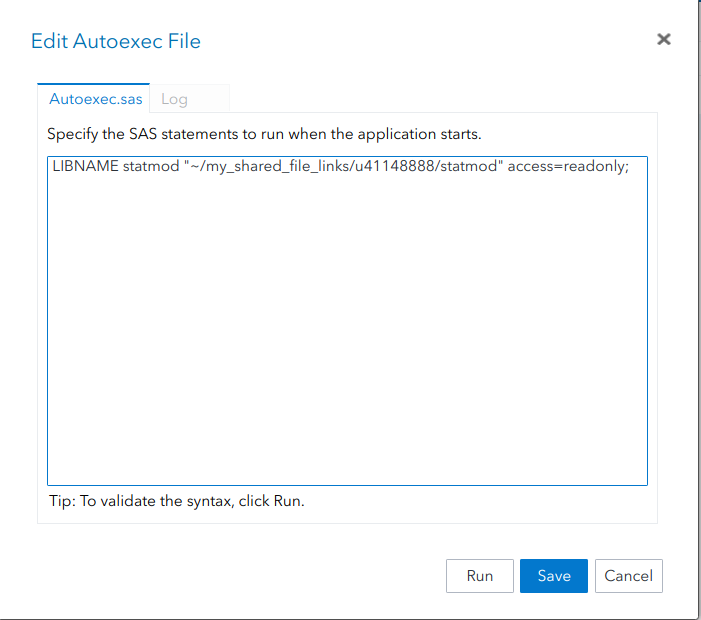
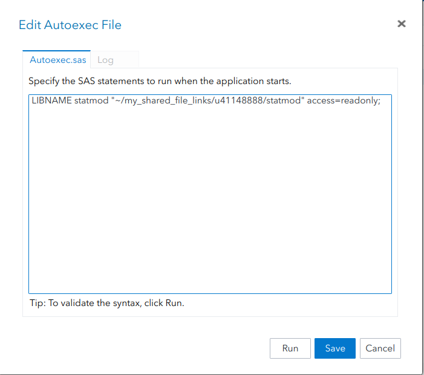

LIBNAME multi "~/my_shared_file_links/u41148888/multi" access=readonly;SAS installation
Create account
As a first step, please create your account for SAS OnDemand for Academics. To register, visit https://odamid.oda.sas.com and click on Register for an account.
After you have successfully created your account, follow these steps:
- Sign on the the Control Center at https://odamid.oda.sas.com.
- Look for the Enroll in a course link in the “Enrollments” section near the bottom of the page. Click this link to start the enrollment.
- Enter the course code:
de87d662-6994-481b-9a3d-d50434654171. - Submit the form.
- Confirm that this is the correct course and then click the button to finish enrolling.
To automatically load the course data library (with read-only access) upon startup, paste the following line in your SAS autoexec script: LIBNAME statmod "~/my_shared_file_links/u41148888/statmod" access=readonly;
 

Setup
To create a library with the introduction data, repeat the previous instruction with the following command:
You can also download the .zip archive and create the library yourself. To do this, create a repository, upload the databases and use the graphical interface to link the folder to a library:


Content
Once you have the library multi set up, you can use the following links to begin the introduction. The video goes over the slides and the code used therein is provided. Once you have been over a section, you can try the exercises (the SAS file contains the solutions with comments, but I urge you to give a try before looking over the answers).
Note
We will only use the SAS/BASE and SAS/STAT modules throughout the course. If you have Windows PC, you could also install SAS directly. The institutional licence is provided for free, but the IT services at HEC charge users for the download of the software. If you bought the download in the past, you are eligible for free updates. This software may only be used as long as you are a student at HEC Montréal.